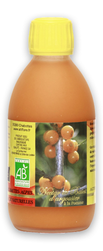

Jus pur d'argousier Bio
20 fois plus de vitamine C que dans l'orange!
Jus pur d'Argousier Le jus d’Argousier est naturellement très pauvre en sucre, ce jus pur d’Argousier obtenu uniquement à partir du pressage des baies à froid est idéal pour les diabétiques et pour les sportifs : dilué dans 1 litre d’eau il s’avère très désaltérant et très tonique.
Le jus de fruit d'argousier est un excellent complément alimentaire riche en :
- Vitamine C (20 fois plus que l'orange).
- Vitamine A (autant que le jus de carotte frais).
- Vitamine E (autant q'un poisson gras).
Ces vitamines sont de puissants capteurs de radicaux libres qui aident à lutter contre le vieillissement tout en apportant beaucoup d'énergie à l'organisme; l'argousier contient également des minéraux et des acides aminés.
|